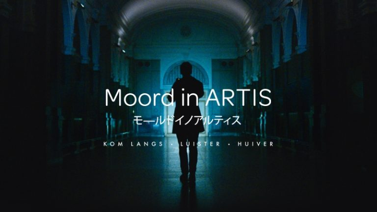

Assignment
What was the goal?
The goal was to put visitors of the Artis Zoo in an exciting and thrilling experience. Which lets you explore a world both real and fictional that intertwine. This way they would be immersed as it were really happening. Reality would blend with fiction and your perception couldn’t tell the difference.
But what is it?
They build native apps for both iOS and Android and build a custom CMS for geo-mapping a story, sounds and trigger point at any location. This experience runs completely from within the app and once you started you can put your phone in your pocket, plug in your headset and start experiencing.
How does it work?
With technologies like 3D sound, microphones, gps/iBeacons. When the user comes into a specific specified area, certain sounds will play from different directions. These sounds can have an effect applied, like reverb or delay. With this customers can get a bit tricked, in a conformable way.
Why is it interesting relative to the field of HCI.
As our course uses basic sensors, complex code and actuators. Murder In Artis is actually HCI but in a larger scale. Sensors are used to determine an user’s position and with that information. An actuator will be activated, like a speaker with a monkey noise playing for example.
Why I found this interesting.
I’ve always loved sound and the different ways it can make you feel. Especially with Murder In Artis. Since your sight is limited and now your other senses, like your ears for example, are amplified. Also love the simplicity of it. If I really want to, I could create something like this as well. It would be smaller, but nonetheless the same principles will be used.